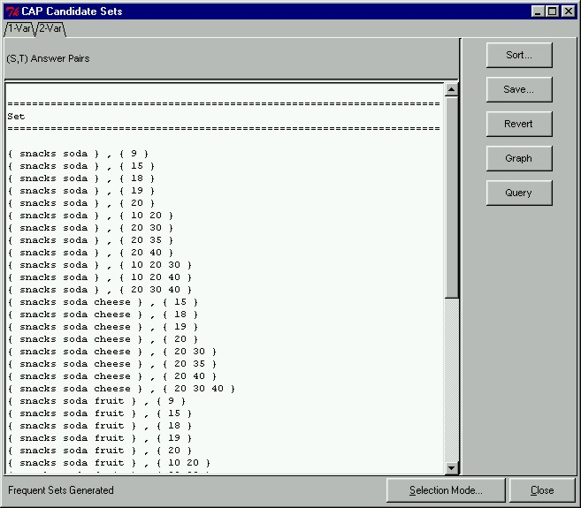

 |
Two-Variable Candidate PairsClicking on the 2-Var tab in the CAP Candidate Sets window will display the two-variable candidate pairs satisfying all two-variable constraints. Here we see all the pairs which are candidates for Phase II.
|